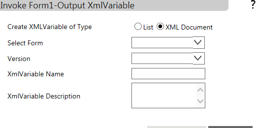
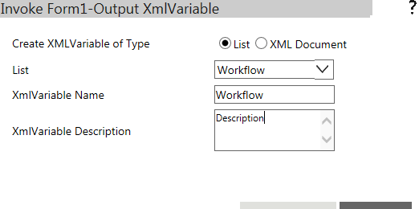

No
This property is used to get the data from the Forms which you have edited from the Work items page. Depending on the type of XML variable selected in this property, the XML data is stored, provided the output instance XML has the same schema of the Form.
For instance:
Scenario: Display an existing list item data using Invoke Form and then store the updated Form data in a different list (destination list): An intermediate XML Variable is required for such scenarios. Use an Update Variable activity before the Invoke Form activity, to assign the Source list XML values to the Intermediate XML Variable, Then use this intermediate XML variable as Input Instance XML and destination XML List as Output Instance XML.
Steps to create Output Instance XML variable
The following screen will be displayed.

Create a Output Instance XML Variable
Note: By default, the No option is selected and the screen as shown in the image above is displayed. If the Yes option is selected, the following screen is displayed. The difference, as you can notice, is that the No option allows you to select a form, whereas the Yes option allows you to select a list.

Note: On this screen, select a list from the List drop-down.